第01章_Java语言概述
讲师：尚硅谷-宋红康（江湖人称：康师傅）
1. Java知识脉络图
1.1 Java基础全程脉络图
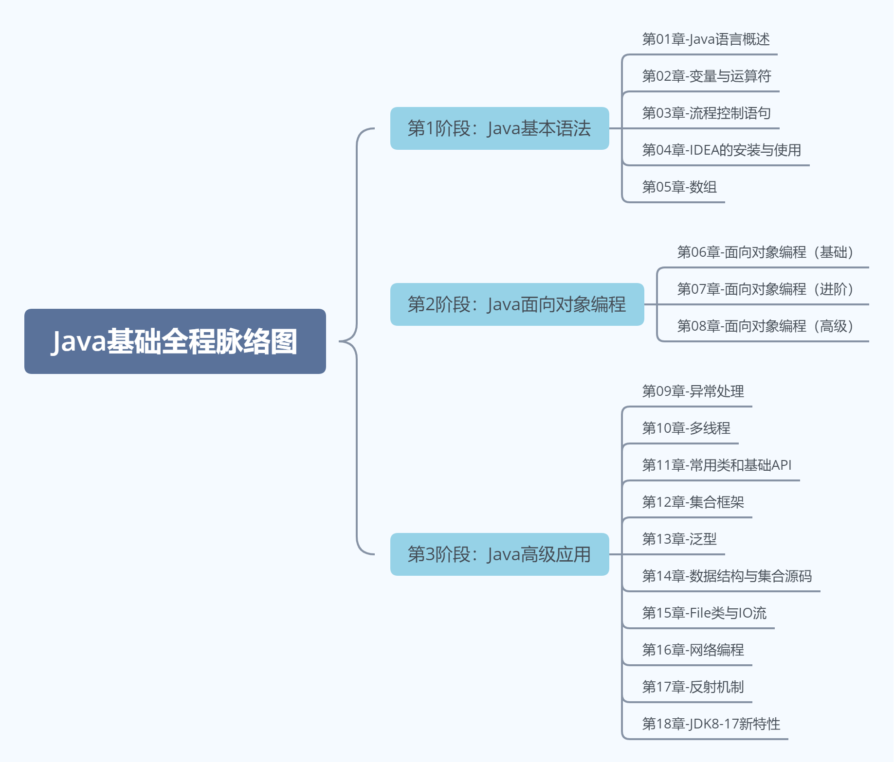
1.2 本章专题与脉络
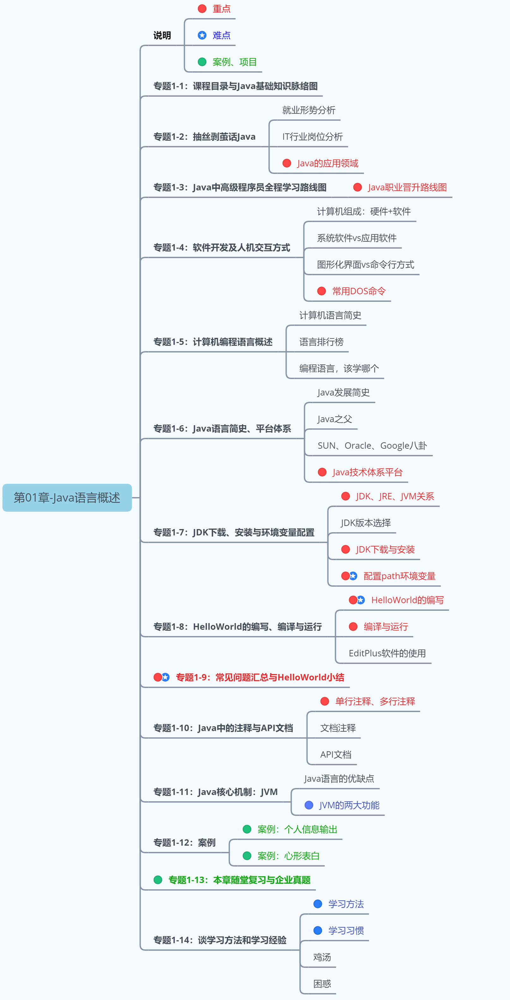
2. 抽丝剥茧话Java
2.1 当前大学生就业形势
麦可思研究院发布了《2022年中国大学生就业报告》，针对2021届毕业生收入较高的本科专业排行榜：
麦可思研究院发布过《2021年中国大学生就业报告》，应届本科毕业生就业数量较大的前十位行业类的就业质量：报告还对毕业三年后的2017届毕业生所在十大行业进行了统计：
- 从国家统计局发布的2021年全国平均工资来看，不管在城镇非私营单位还是私营单位，
IT业均为最高。
2.2 IT互联网是否依旧靠谱
过去不能代表未来！互联网是否依旧靠谱？！
2014 年至 2018 年间，我国网民规模从 6.49 亿增长为 8.29 亿，增幅为
27.5%。同一时间段，全国移动互联网接入的流量却从 20.6EB 增长到了 711.1EB，增幅达3352%（获取和处理的信息量大幅增加）。随着 5G 技术进一步拓宽移动互联网的速度和容量，
产业互联网将在消费型流量的基础上创造生产型流量，根据报告的预测，至 2024 年，全国移动互联网的接入流量将达到 127663.8EB，流量规模达到2018年的179.5倍。当下，5G、物联网、人工智能、产业互联网都是国家政策大方向，需要大量
能与机器对话的中高端人才。
2.3 IT行业岗位分析
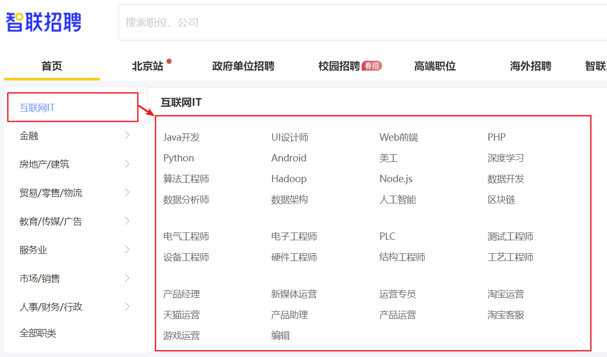
软件开发，是进入互联网IT圈最好的选择之一！
- 起始薪资高
- 工作环境好
- 涨薪幅度高
- 行业更公平
2.4 软件开发之Java开发

移动应用领域（集成Android平台）：Java在Android端是主要开发的语言，占有重要的地位。
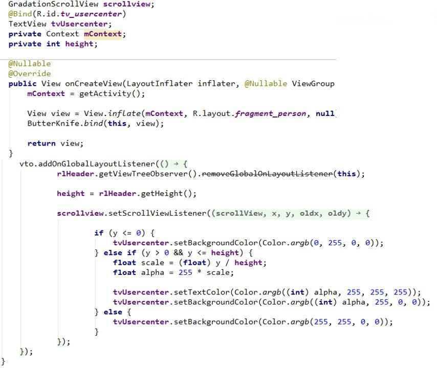
企业级应用领域（JavaEE后台）：用来开发企业级的应用程序，大型网站如淘宝、京东、12306，以及各大物流、银行、金融、社交、医疗、交通、各种OA系统等都是用JavaEE技术开发的。
大数据分析、人工智能领域：流行的大数据框架，如Hadoop、Flink都是用Java编写的。Spark使用Scala编写，但可以用Java开发应用。
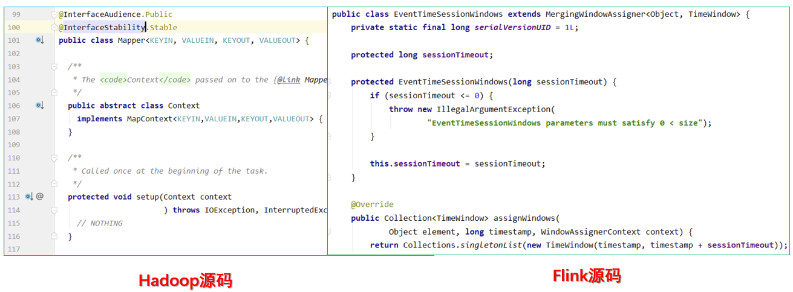
Eversoft公司在提到2022年Java发展趋势时写道：
Java 是用于开发大数据项目的最主流的语言。我们可以轻松地预测它也将在之后继续主导大数据！游戏领域、桌面应用、嵌入式领域：很多大型游戏的后台、桌面应用等也是Java开发的。
2.5 到底多少人在用Java
2020年，根据 IDC 的报告“Java Turns 25”显示，超过
900 万名开发人员（全球专职开发人员中的69%）在使用 Java——比其他任何语言都多。该报告指出，大多数企业业务服务都依靠 Java 来实现。... Java 一直是开发人员中最流行的编程语言，被誉为“
宇宙第一语言”。
我想告诉大家：
“市场的需求比较大，市场的供给比较大”
“如果你在Java领域里持续积累5-7年以上，那么你至少会成为这个行业的一个专家！”
2.6 八卦一下程序员
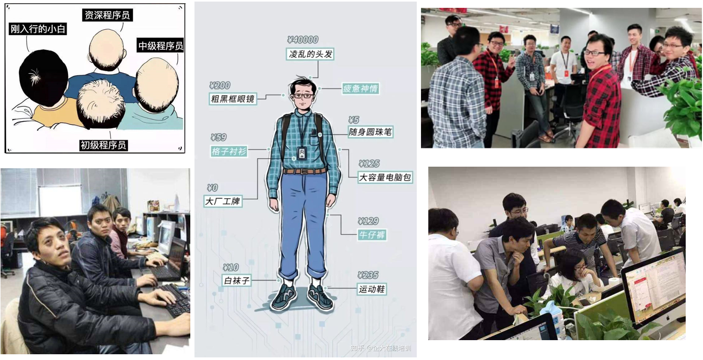
还可以是：
2.7 Java系列课程体系
- 见02_学习路线图之《Java中高级程序员全程学习路线图.xmind》
2.8 Java职业晋升路线图
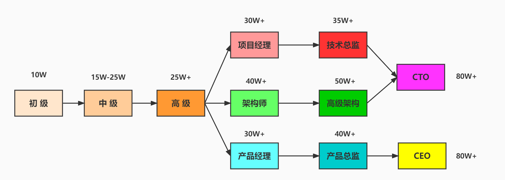
薪资数据统计来源：拉勾网
3. 计算机的硬件与软件
3.1 计算机组成：硬件+软件

3.2 CPU、内存与硬盘
CPU（Central Processing Unit，中央处理器）
- 人靠大脑思考，电脑靠CPU来运算、控制。
硬盘（Hard Disk Drive）
- 计算机最主要的存储设备，容量大，断电数据不丢失。
- 正常分类：
机械硬盘（HDD）、固态硬盘（SSD）以及混合硬盘（SSHD） - 固态硬盘在开机速度和程序加载速度远远高于机械硬盘，缺点就是贵，所有无法完全取代机械硬盘。
内存（Memory）
- 负责硬盘上的数据与CPU之间数据交换处理
- 具体的：保存从硬盘读取的数据，提供给CPU使用；保存CPU的一些临时执行结果，以便CPU下次使用或保存到硬盘。
- 断电后数据丢失。

3.3 输入设备：键盘输入
- 熟悉指法
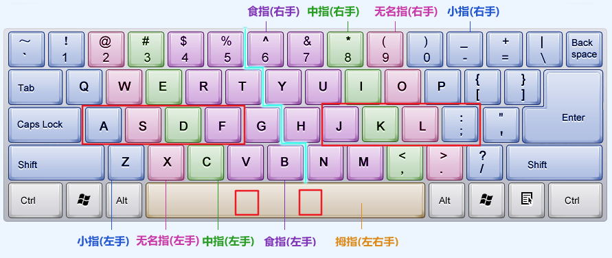
不熟悉键盘的小伙伴，可以“金山打字通”走起了。坚决杜绝二指禅！！
4. 软件相关介绍
4.1 什么是软件
软件，即一系列按照特定顺序组织的计算机数据和指令的集合。有系统软件和应用软件之分。
Pascal之父Nicklaus Wirth： “Programs = Data Structures + Algorithms”
系统软件：
应用软件：
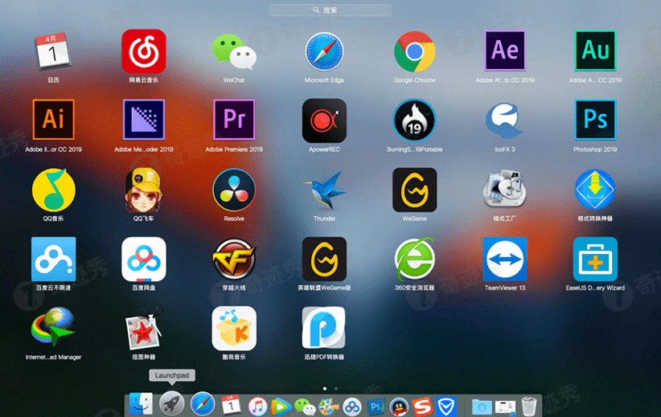
4.2 人机交互方式
图形化界面（Graphical User Interface，GUI），这种方式简单直观，使用者易于接受，容易上手操作。
命令行方式（Command Line Interface，CLI），需要在控制台输入特定的
指令，让计算机完成一些操作。需要记忆一些指令，较为麻烦。
4.3 常用的DOS命令
DOS（Disk Operating System，磁盘操作系统）是Microsoft公司在Windows之前推出的一个操作系统，是单用户、单任务（即只能执行一个任务）的操作系统。现在被Windows系统取代。
对于Java初学者，学习一些DOS命令，会非常有帮助。
进入DOS操作窗口：
按下Windows+R键盘，打开运行窗口，输入cmd回车，进入到DOS的操作窗口。
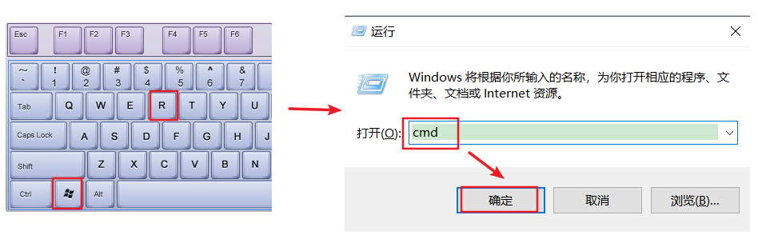
常用指令：
操作1：进入和回退
| 操作 | 说明 |
|---|---|
| 盘符名称: | 盘符切换。E:回车，表示切换到E盘。 |
| dir | 列出当前目录下的文件以及文件夹 |
| cd 目录 | 进入指定单级目录。 |
| cd 目录1\目录2\... | 进入指定多级目录。cd atguigu\JavaSE |
| cd .. | 回退到上一级目录。 |
| cd \ 或 cd / | 回退到盘符目录。 |
操作2：增、删
| 操作 | 说明 |
|---|---|
| md 文件目录名 | 创建指定的文件目录。 |
| rd 文件目录名 | 删除指定的文件目录（如文件目录内有数据，删除失败） |
操作3：其它
| 操作 | 说明 |
|---|---|
| cls | 清屏。 |
| exit | 退出命令提示符窗口。 |
| ← → | 移动光标 |
| ↑ ↓ | 调阅历史操作命令 |
| Delete和Backspace | 删除字符 |
5. 计算机编程语言
5.1 计算机语言是什么
- 语言：是人与人之间用于沟通的一种方式。例如：中国人与中国人用普通话沟通。而中国人要和英国人交流，可以使用英语或普通话。
- 计算机编程语言，就是人与计算机交流的方式。人们可以使用
编程语言对计算机下达命令，让计算机完成人们需要的功能。 - 计算机语言有很多种。如：C 、C++、Java、Go、JavaScript、Python，Scala等。
体会：语言 = 语法 + 逻辑
5.2 计算机语言简史
第一代：机器语言（相当于人类的石器时代）
1946年2月14日，世界上第一台计算机
ENAC诞生，使用的是最原始的穿孔卡片。这种卡片上使用的是用二进制代码表示的语言，与人类语言差别极大，这种语言就称为机器语言。比如一段典型的机器码：11. 0000,0000,000000010000 代表 LOAD A, 1622. 0000,0001,000000000001 代表 LOAD B, 133. 0001,0001,000000010000 代表 STORE B, 16这种语言本质上是计算机能识别的唯一语言，人类很难理解。可以大胆想象"
此时的程序员99.9%都是异类！"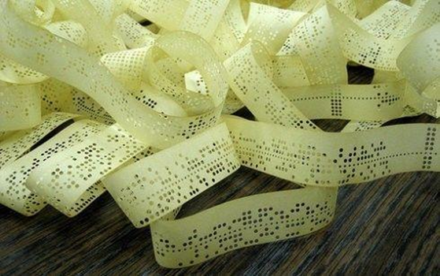
第二代：汇编语言（相当于人类的青铜&铁器时代）
使用英文缩写的
助记符来表示基本的操作，这些助记符构成了汇编语言的基础。比如：LOAD、MOVE等，使人更容易使用。因此，汇编语言也称为符号语言。优点：能编写
高效率的程序缺点：汇编语言是
面向机器的，不同计算机机型特点不同，因此会有不同的汇编语言，彼此之间不能通用。程序不易移植，较难调试。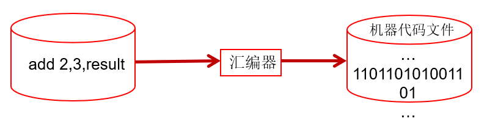
比起机器语言，汇编大大进步了，是机器语言向更高级的语言进化的
桥梁。目前仍然应用于工业电子编程领域、软件的加密解密、计算机病毒分析等。
第三代：高级语言（相当于人类的信息时代）
高级语言发展于20世纪50年代中叶到70年代，是一种
接近于人们使用习惯的程序设计语言。它允许程序员使用接近日常英语的指令来编写程序，程序中的符号和算式也与日常用的数学式子差不多，接近于自然语言和数学语言，容易为人们掌握。比如：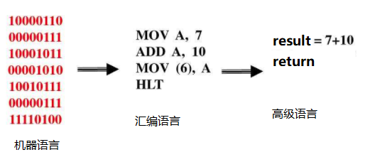
高级语言
独立于机器，有一定的通用性；计算机不能直接识别和执行用高级语言编写的程序，需要使用编译器或者解释器，转换为机器语言才能被识别和执行。

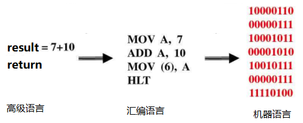
此外，高级语言按照程序设计方法的不同，又分为：面向过程的语言、面向对象的语言。
- C、Pascal、Fortran面向过程的语言
- C++面向过程/面向对象
- Java跨平台的纯面向对象的语言
- C#、Python、JavaScript、Scala…
目前以及可预见的将来，计算机语言仍然处于“第三代高级语言”阶段。但是不管是什么语言，最后都要向机器语言靠近，因为CPU只认识0和1。
5.3 计算机语言排行榜
TIOBE （https://www.tiobe.com/tiobe-index/）是一个流行编程语言排行，每月更新。排名权重基于世界范围内 工程师数量，Google、Bing、Yahoo! 、Wikipedia、Amazon、Youtube和百度这些主流的搜索引擎，也将作为排名权重的参考指标。
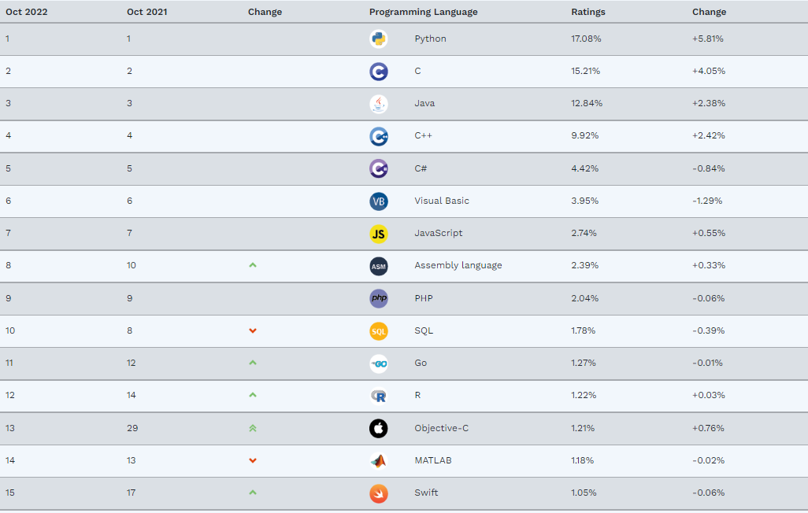
计算机语言走势
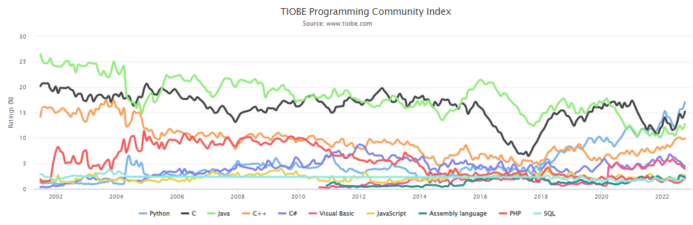
5.4 编程语言，该学哪个？
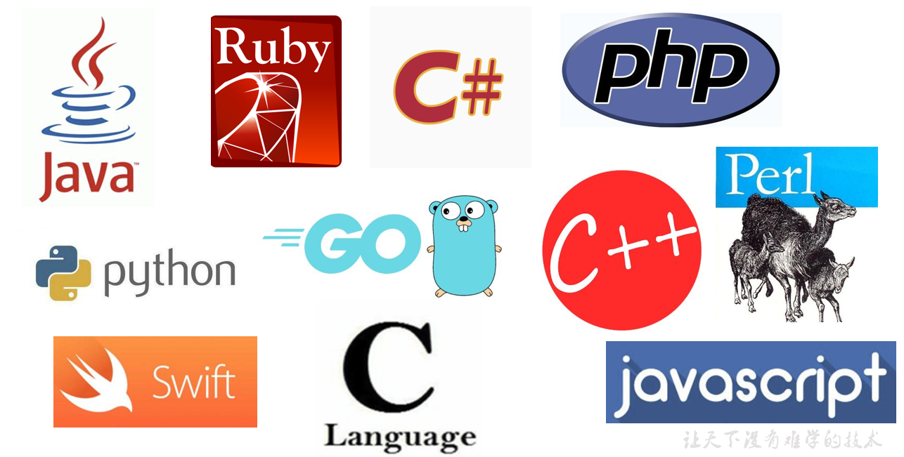
网传的编程语言鄙视链：
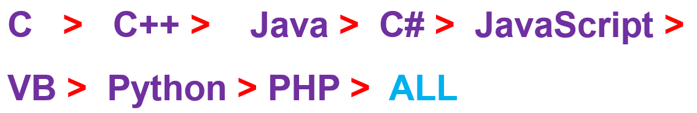
- C语言：万物之源
- 诞生于
1972年，由AT&T公司旗下贝尔实验室创建完成，用于构建Unix操作系统。- 偏向计算机底层操作（操作系统、网络、硬件驱动等）。
- 优势：几乎所有现代编程语言都脱胎于C
- 劣势：相当陡的学习曲线；不支持面向对象编程
- C++语言：难学的语言
- 诞生于1983年，作为C语言的增强方案、
升级版本。C++是C语言的超集，C语言的大部分知识也适用于C++。- 用途：windows 或 MacOS UI、office全家桶、主流的浏览器、Oracle、MySQL、著名的游戏引擎（如星际争霸、魔兽世界）等
- 优势：很多公司都用 C++ 开发核心架构，如 Google、腾讯、百度、阿里云等；面向对象性
- 劣势：体系极为庞大，这是世界目前来说
最复杂也是最难的编程语言。
- C#语言：背靠大树的语言
- 诞生于
2000年，一款强大而灵活的编程语言。靠着微软这棵大树，是多年来windows平台的一门主流编程语言。- 用途：windows桌面应用开发、Windows Azure、游戏开发
- PHP语言：最好的语言？
- 诞生于1994年，一款
服务器端脚本语言。最初表示个人主页（Personal Home Page）- PHP语法和C类似，有很多的模板和框架，简单易懂，也许你可以在短短几天做出web app。它主要用于web端，快速建站网络开发
- 劣势：学习门槛太低；其代码运行速度低于大部分编程语言党争对手
- Python：易学的语言
- 诞生于1991年，一种面向对象的语言，虽然运行效率不高，但是
开发效率非常高。- Python被称为
胶水语言，哪里都可以用。
- JavaScript语言：前端为王
- 诞生于1995年，网景公司开发完成。
- JavaScript是JavaScript 是目前
所有主流浏览器上唯一支持的脚本语言。在前端开发中，占有不可替代的地位。
- Java语言：需求旺盛
- 创建于1995年，Java是一种面向对象、基于类的编程语言。
- Java可能是目前
运用最广的项目语言。代码稳定性超过 C 和 C++，生产力远超 C 和 C++。有 JVM 在，可以轻松地跨平台。- 具有强大的开源开发工具，大量的开源共享库。
- Java拥有世界上
数量最多的程序员，最不缺人。
- Go语言：夹缝中生存
Go 语言现在很受关注，它是取代 C 和 C++ 的另一门有潜力的语言。
- C 语言太原始了，C++ 太复杂了，Java 太高级了，所以 Go 语言就在这个夹缝中出现了。
Go语言已成为
云计算领域事实上的标准语言，尤其是在 Docker/Kubernetes 等项目中。Go 语言语法特别简单，你有了 C 和 C++ 的基础，学习 Go 的学习成本基本为零。
Go社区从Java社区移植了各种优秀的框架或库。
总结：
- 程序设计语言有很多种，每种语言都是为了实现某个特定的目的而发明的。
- 没有“最好”的语言，只有在特定场景下相对来说，最适合的语言而已。
- 如果你掌握了一种编程语言，也会更容易上手其它的编程语言。关键是学习如何使用
程序设计方法来解决问题。这也是本套课程的主旨。 Talk is cheap，Show me the code。
6. Java语言概述
6.1 Java概述
- 是
SUN(Stanford University Network，斯坦福大学网络公司 )1995年推出的一门高级编程语言。 - 是一种面向Internet的编程语言。Java一开始富有吸引力是因为Java程序可以在
Web浏览器中运行。这些Java程序被称为Java小程序（applet），内嵌在HTML代码中。 - 伴随着互联网的迅猛发展，以及Java技术在web方面的不断成熟，已经成为Web应用程序的首选开发语言。
6.2 Java语言简史
起步阶段：
1991年，Sun公司的工程师小组想要设计一种语言，应用在电视机、电话、闹钟、烤面包机等家用电器的控制和通信。由于这些设备的处理能力和内存都很有限，并且不同的厂商会选择不同的中央处理器(CPU)，因此这种语言的关键是代码短小、紧凑且与平台无关（即不能与任何特定的体系结构捆绑在一起）。
Gosling团队率先创造了这个语言，并命名为“Oak"（起名的原因是因为他非常喜欢自己办公室外的橡树)。后因智能化家电的市场需求没有预期的高，Sun公司放弃了该项计划。
随着20世纪90年代互联网的发展，Sun公司发现该语言在互联网上应用的前景，于是改造了Oak，于1995年5月以Java的名称正式发布。（Java是印度尼西亚爪哇岛的英文名称，因盛产咖啡而闻名。）
发展阶段：
| 发行版本 | 发行时间 | 备注 |
|---|---|---|
| Java 1.0 | 1996.01.23 | Sun公司发布了Java的第一个开发工具包 |
| Java 1.1 | 1997.02.19 | JavaOne会议召开，创当时全球同类会议规模之最。 |
| Java 1.2 | 1998.12.08 | Java拆分成：J2SE（标准版）、J2EE（企业版）、J2ME（小型版） |
| Java 1.3 | 2000.05.08 | |
| Java1.4 | 2004.02.06 | |
| Java 5.0 | 2004.09.30 | ①版本号从1.4直接更新至5.0；②平台更名为JavaSE、JavaEE、JavaME |
| Java 6.0 | 2006.12.11 | 2009.04.20 Oracle宣布收购SUN公司 |
| 2009.04.20 | Oracle公司收购SUN，交易价格74亿美元。 | |
| Java 7.0 | 2011.07.02 | |
| Java 8.0 | 2014.03.18 | 此版本是继Java 5.0以来变化最大的版本。是长期支持版本（LTS） |
| Java 9.0 | 2017.09.22 | ①此版本开始，每半年更新一次；②Java 9.0开始不再支持windows 32位系统 |
| Java 10.0 | 2018.03.21 | |
| Java 11.0 | 2018.09.25 | JDK安装包取消独立JRE安装包，是长期支持版本（LTS） |
| Java 12.0 | 2019.03.19 | |
| ... | ... | |
| Java17.0 | 2021.09 | 发布Java 17.0，版本号也称为21.9，是长期支持版本。 |
| ... | ... | |
| Java19.0 | 2022.09 | 发布Java19.0，版本号也称为22.9。 |
6.3 Java之父
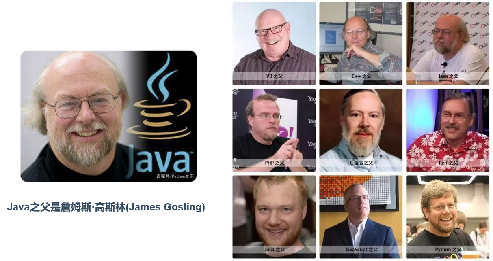
詹姆斯·高斯林(James Gosling)先生以“Java 技术之父”而闻名于世。他是Java 技术的创始人，他亲手设计了Java语言，并开发了Java编译器和Java虚拟机，使Java成为了世界上最流行的开发语言。- James Gosling于1984 年加入Sun公司，并一直服务于Sun公司，直至2010年前后，Sun被Oracle并购而加入Oracle，担任客户端软件集团的首席技术官; 2010年4月从Oracle离职。
6.4 公司八卦
- SUN 与 Oracle
SUN是一家
极具创新能力的公司，2001年 “9.11”以前，SUN公司市值超过1000亿美元。 但是没能利用Java构建一个强有力、可变现的生态系统，没打好Java这张牌。此后，互联网泡沫破裂，硬件需求大幅减少，它的市值在一个月之内跌幅超过90%。SUN公司的成长用了20年，而衰落只用了1年！
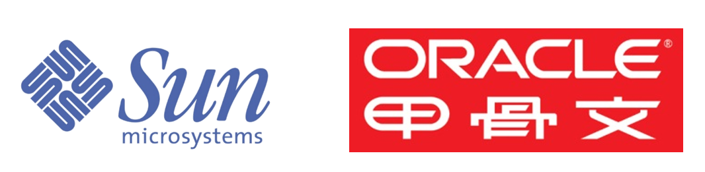
- Oracle 与 Google
Google和Oracle的侵权事件：
2010 年 8 月，Oracle 起诉 Google 的 Android 系统侵权，要求赔偿 26 亿美元。
- Oracle认为Google的代码中使用了Java的
37个API，并且认为Google是故意为之，因为这样做的好处是可以让更多的Java程序员更容易接受Android的代码。- Oracle认为Android 中有
9行代码直接抄袭了Java的实现。这9行牛气哄哄的代码都出自一人之手，他就是Java 大牛------Joshua Bloch。2018 年 3 月，美国联邦巡回上诉法院裁决，谷歌侵犯了甲骨文的版权，支付高达
88亿美元的赔偿金。2021 年 4 月，美国最高法院给出了最终裁决：谷歌胜诉，其代码属于“合理使用”的范畴。为期十多年的软件行业“第一版权案”落幕。
xxxxxxxxxx101//Code In OpenJDK / Android ：21. private static void rangeCheck(int arrayLen, int fromIndex, int toIndex) {32. if (fromIndex > toIndex)43. throw new IllegalArgumentException("fromIndex(" + fromIndex +54. ") > toIndex(" + toIndex+")");65. if (fromIndex < 0)76. throw new ArrayIndexOutOfBoundsException(fromIndex);87. if (toIndex > arrayLen)98. throw new ArrayIndexOutOfBoundsException(toIndex);109. }6.5 Java技术体系平台
Java SE(Java Standard Edition)标准版
- 支持面向
桌面级应用（如Windows下的应用程序）的Java平台，即定位个人计算机的应用开发。 - 包括用户界面接口AWT及Swing，网络功能与国际化、图像处理能力以及输入输出支持等。
- 此版本以前称为J2SE
- 支持面向
Java EE(Java Enterprise Edition)企业版
- 为开发企业环境下的应用程序提供的一套解决方案，即定位
在服务器端的Web应用开发。 - JavaEE是JavaSE的扩展，增加了用于服务器开发的类库。如：Servlet能够延伸服务器的功能，通过请求-响应的模式来处理客户端的请求；JSP是一种可以将Java程序代码内嵌在网页内的技术。
- 版本以前称为J2EE
- 为开发企业环境下的应用程序提供的一套解决方案，即定位
Java ME(Java Micro Edition)小型版
- 支持Java程序运行在
移动终端（手机、机顶盒）上的平台，即定位在消费性电子产品的应用开发 - JavaME是JavaSE的内伸，精简了JavaSE 的核心类库，同时也提供自己的扩展类。增加了适合微小装置的类库：javax.microedition.io.*等。
- 此版本以前称为J2ME
- 支持Java程序运行在

注意：
Android开发不等同于Java ME的开发
7. Java开发环境搭建（掌握）
7.1 什么是JDK、JRE
- JDK (
JavaDevelopmentKit)：是Java程序开发工具包，包含JRE和开发人员使用的工具。 - JRE (
JavaRuntimeEnvironment) ：是Java程序的运行时环境，包含JVM和运行时所需要的核心类库。
如下是Java 8.0 Platform：


小结：
JDK = JRE + 开发工具集（例如Javac编译工具等）
JRE = JVM + Java SE标准类库
7.2 JDK版本选择
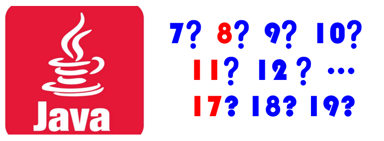
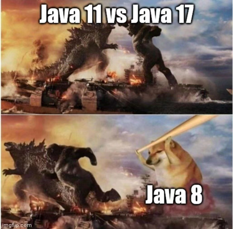
- 自Java 8版本发布以来，其后的每次更新，都会有小伙伴高呼：Java8 YYDS！
- 论坛的声音：“
你发任你发，我用Java 8！”
数据说话1：
JRebel 于2022年4月前后发布了《2022 年Java生态系统状况报告》，报告中提到使用Java11 的占比最多，Java 8 紧随其后，如下图。而此前2020年的报告显示，Java8占比达到了84.48%。
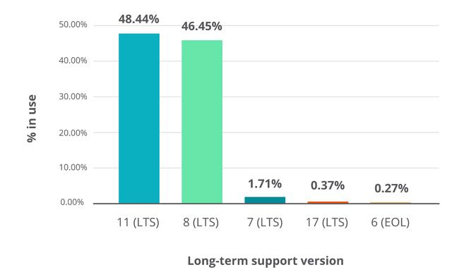
我的分析：
G1是最受欢迎的GC算法。Java 11及更高版本的G1收集器是默认的GC，而Java 8中并不是。出于对G1的喜爱，很多开发者才会选择抛弃Java 8。
数据说话2：
此外，某美国软件开发商在对近千名专业的Java开发者调研后，发布的《2022年Java开发者生产力报告》称：八年前发布的Java 8依然是Java中应用最广泛的版本，占比 37%，其次是 Java 11，占比29% 。
高斯林说话：
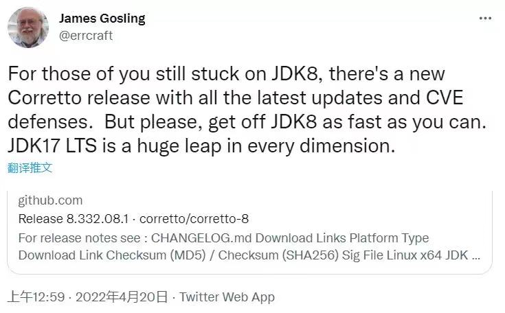
Spring框架说话：
在Java 17正式发布之前，Java开发框架Spring率先在官博宣布，Spring Framework 6和Spring Boot 3计划在2022年第四季度实现总体可用性的高端基线：
- Java 17+(来自 Spring Framework 5.3.x 线中的 Java 8-17)
- Jakarta EE 9+（来自Spring框架5.3.x 线中的 Java EE 7-8）
Spring 官方说明：https://spring.io/blog/2022/01/20/spring-boot-3-0-0-m1-is-now-available

意味着：springboot3.0 是需要用java17和spring6.0为基础建设。如果从企业选型最新springboot3.0作为架构来说，它搭配jdk17肯定是标配了。
7.3 JDK的下载
- 下载网址（Oracle公司官网）：www.oracle.com
- 下载步骤：如图所示，在官网底部选择Developers开发者

（1）在Developers页面中间的技术分类部分，选择Java，单击进入，如图所示：

（2）这里展示的是最新Java版本，例如Java17。单击Download Java，然后选择具体的版本下载。
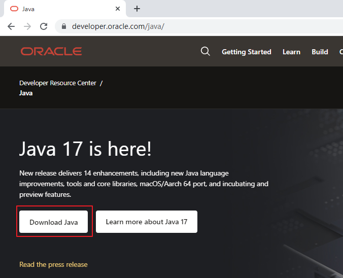
（3）选择Download Java按钮后
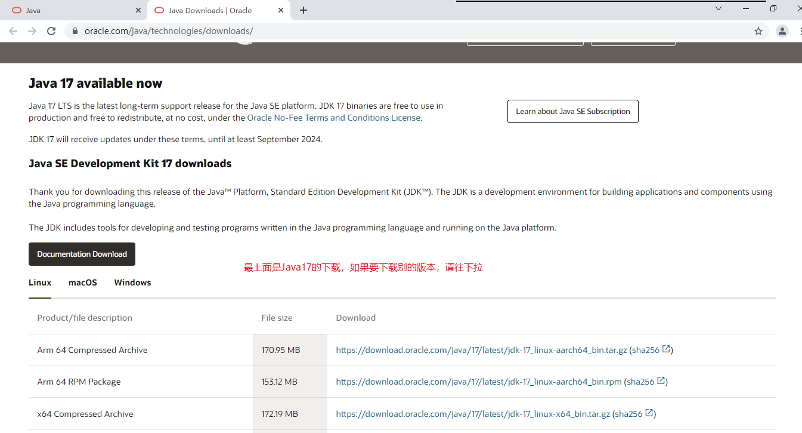
（4）如果想安装Java8 可以选择如下位置：
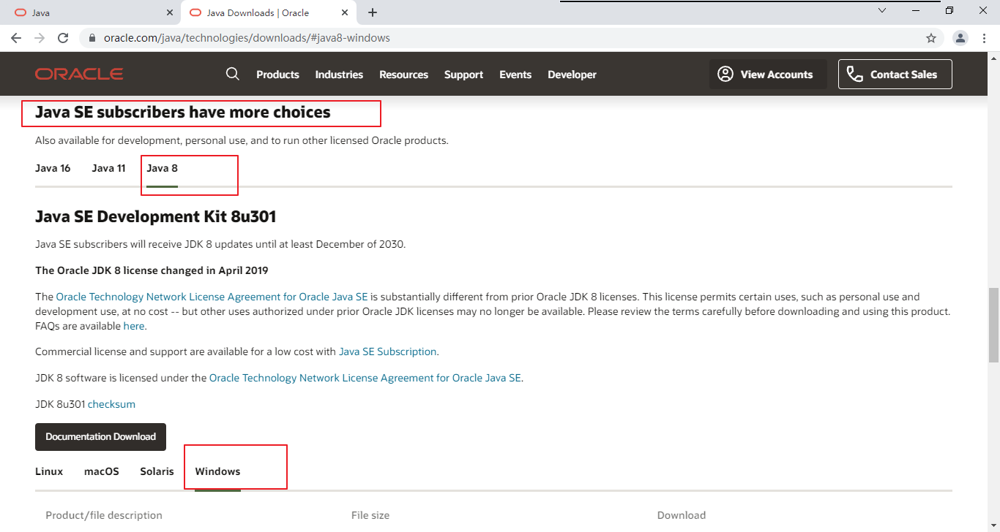
（5）选择Accept License Agreement，

（6）注册或登录后下载：

（7）如果需要安装其它版本，可以选择Java archive：

接着进行选择下载即可：

7.4 JDK的安装
安装说明
- 傻瓜式安装，下一步即可。
- 建议：安装路径不要有中文或者空格等特殊符号。
- 本套课程会同时安装JDK8 和 JDK17，并以JDK17为默认版本进行讲解。
- 安装步骤：
（1）双击jdk-17_windows-x64_bin.exe文件，并单击下一步，如图所示：
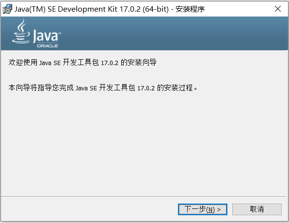
（2）修改安装路径，单击更改，如图所示：

（3）将安装路径修改为D:\develop_tools\jdk\jdk-17.0.2\，并单击下一步，如图所示：
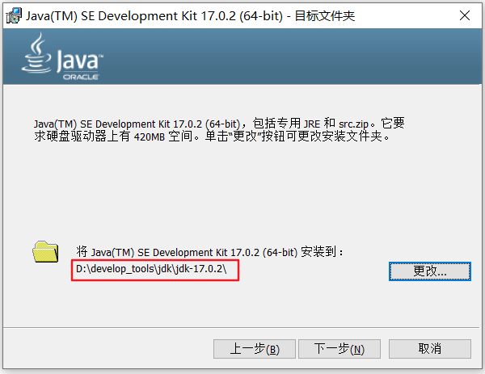
（4）稍后几秒，安装完成，如图所示：

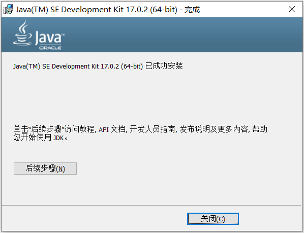
7.5 配置path环境变量
7.5.1 理解path环境变量
什么是path环境变量？
答：window操作系统执行命令时，所要搜寻的路径。
为什么配置path？
答：希望在命令行使用javac.exe等工具时，任意目录下都可以找到这个工具所在的目录。
以JDK为例演示
我们在C:\Users\songhk目录下使用javac命令，结果如下：

我们在JDK的安装目录的bin目录下使用javac命令，结果如下：
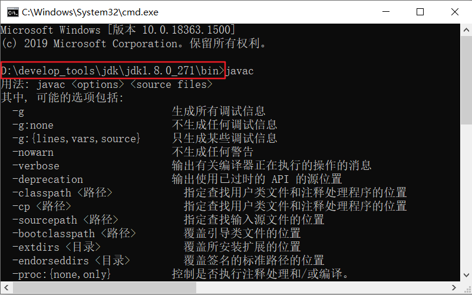
我们不可能每次使用java.exe，javac.exe等工具的时候都进入到JDK的安装目录下，太麻烦了。这时就需要配置path环境变量。
7.5.2 JDK8配置方案1：只配置path
- 步骤：
（1）打开桌面上的计算机，进入后在左侧找到此电脑，单击鼠标右键，选择属性，如图所示：

（2）选择高级系统设置，如图所示：

（3）在高级选项卡，单击环境变量，如图所示：

（4）在系统变量中，选中Path 环境变量，双击或者点击编辑 ,如图所示：
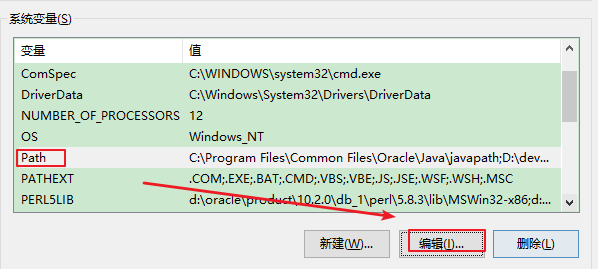
（5）点击新建，填入D:\develop_tools\jdk\jdk1.8.0_271\bin ，并将此值上移到变量列表的首位。如图所示：
- 编辑模式1：

- 编辑模式2：（注意，结尾需要有英文模式下的;）

（6）环境变量配置完成，重新开启DOS命令行，在任意目录下输入javac 或java命令或java -version，运行成功。

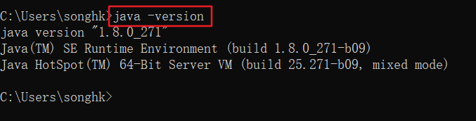
7.5.3 JDK8配置方案2：配置JAVA_HOME+path（推荐）
- 步骤：
（1）打开桌面上的计算机，进入后在左侧找到计算机，单击鼠标右键，选择属性，如图所示：
（2）选择高级系统设置，如图所示：
（3）在高级选项卡，单击环境变量，如图所示：
（4）在系统变量中，单击新建 ，创建新的环境变量，如图所示：

（5）变量名输入JAVA_HOME，变量值输入 D:\develop_tools\jdk\jdk1.8.0_271 ，单击确定，如图所示：

（6）选中Path 环境变量，双击或者点击编辑 ，如图所示：
（7）在变量值的最前面，键入%JAVA_HOME%\bin。如图所示：
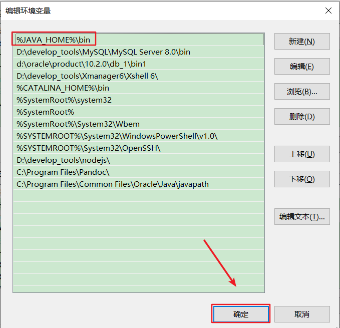
注意：强烈建议将%JAVA_HOME%\bin声明在path环境变量中所有变量的最前面！
（8）环境变量配置完成，重启DOS命令行，在任意目录下输入javac 或java命令或java -version，运行成功。
我想说：
有的书籍、论坛、视频上还提到配置classpath，用于指名class文件识别的路径。其实是没必要的，反而建议大家如果配置了classpath环境变量，要删除。对于初学者，反而不友好。
小结如下：

7.5.4 JDK17配置方案：自动配置
不管大家有没有提前安装JDK8或其它版本JDK，在我们安装完JDK17之后，理应按JDK8的方式配置path环境变量。但是，我们发现在安装完JDK17以后，配置环境变量之前，执行CMD指令：
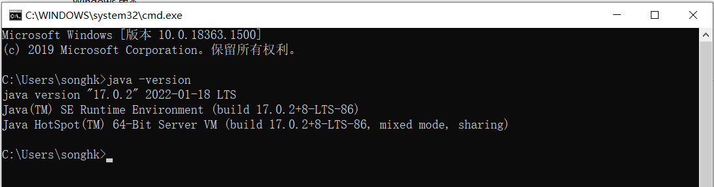
竟然成功了！而且是17.0.2版本。因为JDK17在安装之后，自动进行了环境变量的配置。如下：

这里建议，将JDK17安装的路径，设置为JAVA_HOME，并将%JAVA_HOME%\bin上移到首位。


思考：如果你仍然希望在JDK8下开发Java程序？如何做呢？
8. 开发体验：HelloWorld（掌握）
JDK安装完毕，我们就可以开发第一个Java程序了，习惯性的称为：HelloWorld。
8.1 开发步骤
Java程序开发三步骤：编写、编译、运行。
- 将 Java 代码编写到扩展名为 .java 的源文件中
- 通过 javac.exe 命令对该 java 文件进行编译，生成一个或多个字节码文件
- 通过 java.exe 命令对生成的 class 文件进行运行

8.2 编写
（1）在D:\JavaSE\chapter01 目录下新建文本文件，完整的文件名修改为HelloWorld.java，其中文件名为HelloWorld，后缀名必须为.java。
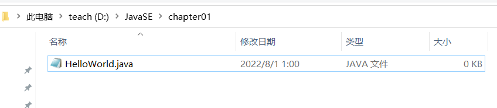
（2）用记事本或editplus等文本编辑器打开（虽然记事本也可以，但是没有关键字颜色标识，不利于初学者学习）
（3）在文件中输入如下代码，并且保存：
xxxxxxxxxx51class HelloChina {2 public static void main(String[] args) {3 System.out.println("HelloWorld!!");4 }5}- 友情提示1：每个字母和符号必须与示例代码一模一样，包括大小写在内。
- 友情提示2：

或

第一个HelloWord 源程序就编写完成了，但是这个文件是程序员编写的，JVM是看不懂的，也就不能运行，因此我们必须将编写好的Java源文件 编译成JVM可以看懂的字节码文件 ，也就是.class文件。
8.3 编译
在DOS命令行中，进入D:\JavaSE\chapter01目录，使用javac 命令进行编译。
使用文件资源管理器打开D:\JavaSE\chapter01目录，然后在地址栏输入cmd。

命令：
xxxxxxxxxx11javac Java源文件名.后缀名java举例：
xxxxxxxxxx11javac HelloWorld.java
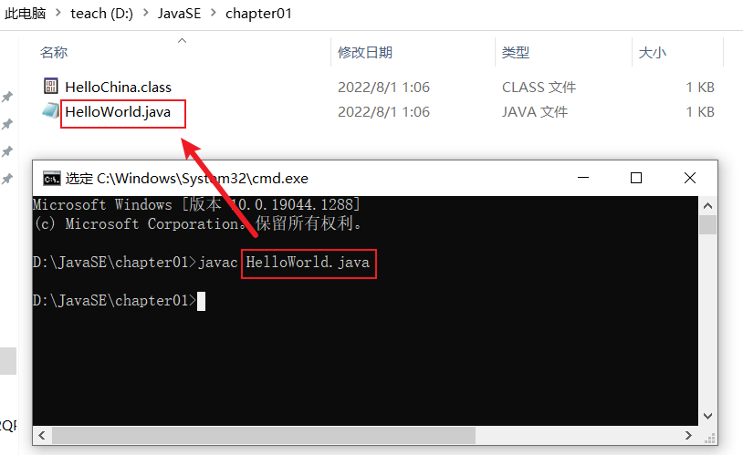
编译成功后，命令行没有任何提示。打开D:\JavaSE\chapter01目录，发现产生了一个新的文件 HelloChina.class，该文件就是编译后的文件，是Java的可运行文件，称为字节码文件，有了字节码文件，就可以运行程序了。
8.4 运行
在DOS命令行中，在字节码文件目录下，使用java 命令进行运行。
命令：
xxxxxxxxxx11java 主类名字主类是指包含main方法的类，main方法是Java程序的入口：
xxxxxxxxxx31public static void main(String[] args){2 3}举例：
xxxxxxxxxx11java HelloChina
错误演示：
java HelloChina.class
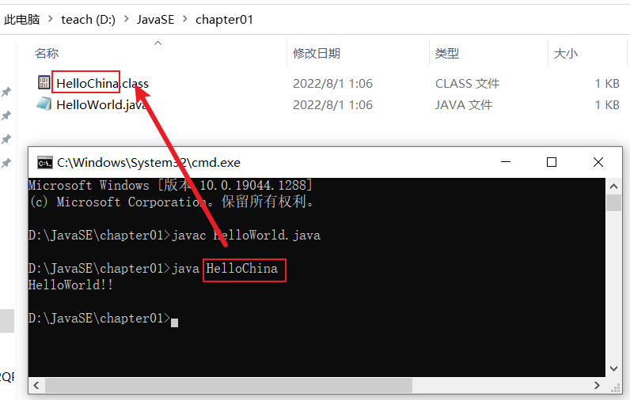
9. Java开发工具
9.1 都有哪些开发Java的工具
- 级别一：文本开发工具
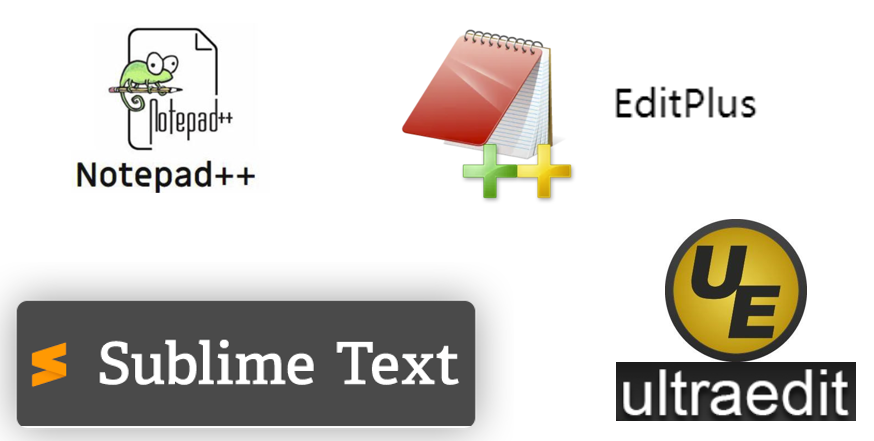
- 级别二：集成开发环境（Integrated Development Environment，IDE）
把代码编写，编译，执行，调试等多种功能综合到一起的开发工具。
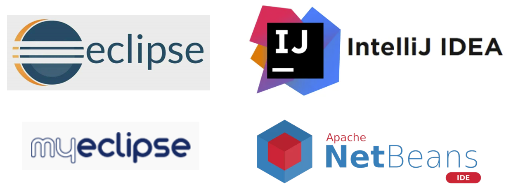
9.2 如何选择
前期我们先使用文本开发工具，培养代码感，利于公司笔、面试。
后期我们使用IDE，提供更强大的功能支持。
10. HelloWorld案例常见错误
10.1 拼写问题
单词拼写问题
- 正确：class 错误：Class
- 正确：String 错误：string
- 正确：System 错误：system
- 正确：main 错误：mian
Java语言是一门严格区分大小写的语言
标点符号使用问题
- 不能用中文符号，英文半角的标点符号（正确）
- 括号问题，成对出现
10.2 编译、运行路径问题
举例1：
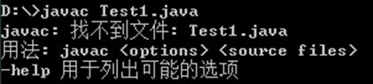
- 源文件名不存在或者写错
- 当前路径错误
- 后缀名隐藏问题
举例2：
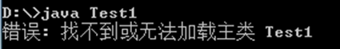
- 类文件名写错，尤其文件名与类名不一致时，要小心
- 类文件不在当前路径下，或者不在classpath指定路径下
10.3 语法问题
举例1：
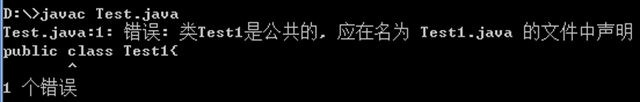
声明为public的类应与文件名一致，否知编译失败。
举例2：
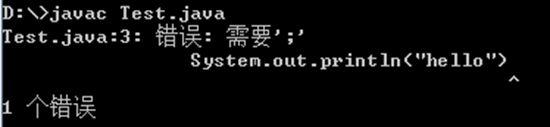
编译失败，注意错误出现的行数，再到源代码中指定位置改错
10.4 字符编码问题
当cmd命令行窗口的字符编码与.java源文件的字符编码不一致，如何解决？

解决方案一：
- 在Notepad++等编辑器中，修改源文件的字符编码：

- 在EditPlus中可以将Java源文件另存为ANSI编码方式（中文操作系统下即为GBK字符集）
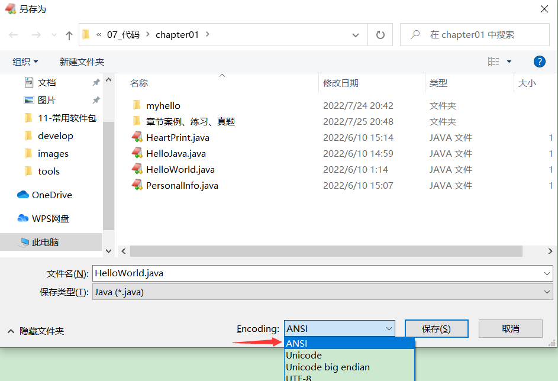
解决方案二：
xxxxxxxxxx11在使用javac命令式，可以指定源文件的字符编码
xxxxxxxxxx11javac -encoding utf-8 Review01.java10.5 建议
注意缩进!
- 一定要有缩进。缩进就像人得体的衣着一样！
- 只要遇到{}就缩进，缩进的快捷键tab键。
必要的空格
- 变量类型、变量、赋值符号、变量值之间填充相应空格，更美观。比如： int num = 10;
11. HelloWorld小结
11.1 Java程序的结构与格式
结构：
xxxxxxxxxx51类{2 方法{3 语句;4 }5}格式：
（1）每一级缩进一个Tab键
（2）{}的左半部分在行尾，右半部分单独一行，与和它成对的"{"的行首对齐
11.2 Java程序的入口
Java程序的入口是main方法
xxxxxxxxxx31public static void main(String[] args){2 3}11.3 两种常见的输出语句
换行输出语句：输出内容，完毕后进行换行，格式如下：
xxxxxxxxxx11System.out.println(输出内容);直接输出语句：输出内容，完毕后不做任何处理，格式如下
xxxxxxxxxx11System.out.print(输出内容);
注意事项：
换行输出语句，括号内可以什么都不写，只做换行处理
直接输出语句，括号内什么都不写的话，编译报错
11.4 源文件名与类名
（1）源文件名是否必须与类名一致？public呢？
x1如果这个类不是public，那么源文件名可以和类名不一致。但是不便于代码维护。2
3如果这个类是public，那么要求源文件名必须与类名一致。否则编译报错。4
5我们建议大家，不管是否是public，都与源文件名保持一致，而且一个源文件尽量只写一个类，目的是为了好维护。（2）一个源文件中是否可以有多个类？public呢？
xxxxxxxxxx31一个源文件中可以有多个类，编译后会生成多个.class字节码文件。2
3但是一个源文件只能有一个public的类。12. 注释(comment)
什么是注释？
- 源文件中用于解释、说明程序的文字就是注释。
注释是一个程序员必须要具有的良好编程习惯。实际开发中，程序员可以先将自己的
思想通过注释整理出来，再用代码去体现。程序员最讨厌两件事：
一件是自己写代码被要求加注释
另一件是接手别人代码，发现没有注释
不加注释的危害

Java中的注释类型：
单行注释
xxxxxxxxxx11//注释文字多行注释
xxxxxxxxxx51/*2注释文字13注释文字24注释文字35*/文档注释 (Java特有)
xxxxxxxxxx41/**2@author 指定java程序的作者3@version 指定源文件的版本4*/
注释的作用
- 它提升了程序的可阅读性。（不加注释的危害性，见图。）
- 调试程序的重要方法。
具体使用1：单行注释、多行注释
对于单行和多行注释，被注释的文字，不会不会出现在字节码文件中，进而不会被JVM（java虚拟机）解释执行。
多行注释里面不允许有多行注释嵌套。
一个段子
xxxxxxxxxx161A：嘿 //是什么意思啊？2B：嘿.3A：呃 我问你//是什么意思？4B：问吧.5A：我刚才不是问了么？6B：啊？7A：你再看看记录...8B：看完了.9A：......所以//是啥？10B：所以什么？11A：你存心耍我呢吧？12B：没有啊 你想问什么？13……14不断循环之后，A一气之下和B绝交，自己苦学程序。15N年之后，A终于修成正果，回想起B，又把聊天记录翻出来看，这时，他突然发现B没有耍他……16而他自己也不知道当年他问B的究竟是什么问题……
具体使用2：文档注释（Java特有）
文档注释内容可以被JDK提供的工具 javadoc 所解析，生成一套以网页文件形式体现的该程序的说明文档。
操作方式。比如：
xxxxxxxxxx11javadoc -d mydoc -author -version HelloWorld.java

案例：
xxxxxxxxxx191//单行注释2/*3多行注释4*/5/**6文档注释演示。这是我的第一个Java程序！^_^7@author songhk8@version 1.09*/10public class HelloWorld{11 12 /**13 Java程序的入口14 @param args main方法的命令参数15 */16 public static void main(String[] args){17 System.out.println("hello");18 }19}13. Java API文档
- API （Application Programming Interface，应用程序编程接口）是 Java 提供的基本编程接口。
- Java语言提供了大量的基础类，因此 Oracle 也为这些基础类提供了相应的说明文档，用于告诉开发者如何使用这些类，以及这些类里包含的方法。大多数Java书籍中的类的介绍都要参照它来完成，它是编程者经常查阅的资料。
- Java API文档，即为JDK使用说明书、帮助文档。类似于：
下载API文档：
14. Java核心机制：JVM
14.1 Java语言的优缺点
Java确实是从C语言和C++语言继承了许多成份，甚至可以将Java看成是类C语言发展和衍生的产物。“青出于蓝，而胜于蓝”。
14.1.1 优点
- 跨平台性：这是Java的核心优势。Java在最初设计时就很注重移植和跨平台性。比如：Java的int永远都是32位。不像C++可能是16，32，可能是根据编译器厂商规定的变化。
- 通过Java语言编写的应用程序在不同的系统平台上都可以运行。“
Write once , Run Anywhere”。 - 原理：只要在需要运行 java 应用程序的操作系统上，先安装一个Java虚拟机 (
JVM ，JavaVirtualMachine) 即可。由JVM来负责Java程序在该系统中的运行。


面向对象性：
面向对象是一种程序设计技术，非常
适合大型软件的设计和开发。面向对象编程支持封装、继承、多态等特性，让程序更好达到高内聚，低耦合的标准。健壮性：吸收了C/C++语言的优点，但去掉了其影响程序健壮性的部分（如指针、内存的申请与释放等），提供了一个相对安全的内存管理和访问机制。
安全性高：
Java适合于网络/分布式环境，需要提供一个安全机制以防恶意代码的攻击。如：
安全防范机制（ClassLoader类加载器），可以分配不同的命名空间以防替代本地的同名类、字节代码检查。简单性：
Java就是C++语法的
简化版，我们也可以将Java称之为“C++--”。比如：头文件，指针运算，结构，联合，操作符重载，虚基类等。高性能：
- Java最初发展阶段，总是被人诟病“
性能低”；客观上，高级语言运行效率总是低于低级语言的，这个无法避免。Java语言本身发展中通过虚拟机的优化提升了几十倍运行效率。比如，通过JIT(JUST IN TIME)即时编译技术提高运行效率。 Java低性能的短腿，已经被完全解决了。业界发展上，我们也看到很多C++应用转到Java开发，很多C++程序员转型为Java程序员。
- Java最初发展阶段，总是被人诟病“
14.1.2 缺点
语法过于复杂、严谨，对程序员的约束比较多，与python、php等相比入门较难。但是一旦学会了，就业岗位需求量大，而且薪资待遇节节攀升。- 一般适用于大型网站开发，
整个架构会比较重，对于初创公司开发和维护人员的成本比较高（即薪资高），选择用Java语言开发网站或应用系统的需要一定的经济实力。 并非适用于所有领域。比如，Objective C、Swift在iOS设备上就有着无可取代的地位。浏览器中的处理几乎完全由JavaScript掌控。Windows程序通常都用C++或C#编写。Java在服务器端编程和跨平台客户端应用领域则很有优势。
14.2 JVM功能说明
JVM（Java Virtual Machine ，Java虚拟机）：是一个虚拟的计算机，是Java程序的运行环境。JVM具有指令集并使用不同的存储区域，负责执行指令，管理数据、内存、寄存器。

14.2.1 功能1：实现Java程序的跨平台性
我们编写的Java代码，都运行在JVM 之上。正是因为有了JVM，才使得Java程序具备了跨平台性。

使用JVM前后对比：

14.2.2 功能2：自动内存管理(内存分配、内存回收)
- Java程序在运行过程中，涉及到运算的
数据的分配、存储等都由JVM来完成 - Java消除了程序员回收无用内存空间的职责。提供了一种系统级线程跟踪存储空间的分配情况，在内存空间达到相应阈值时，检查并释放可被释放的存储器空间。
- GC的自动回收，提高了内存空间的利用效率，也提高了编程人员的效率，很大程度上
减少了因为没有释放空间而导致的内存泄漏。
面试题：
Java程序还会出现内存溢出和内存泄漏问题吗？ Yes!
15. 章节案例
案例1：个人信息输出

xxxxxxxxxx81class Exercise1{2 public static void main(String[] args){3 System.out.println("姓名：康师傅");4 System.out.println();//换行操作5 System.out.println("性别：男");6 System.out.println("家庭住址：北京程序员聚集地：回龙观");7 }8}案例2：输出：心形
结合\n(换行)，\t(制表符)，空格等在控制台打印出如下图所示的效果。
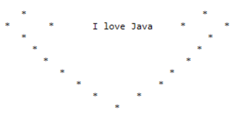
方式一：
xxxxxxxxxx861//方式一：2class Exercise2{3 public static void main(String[] args){4 System.out.print("\t");5 System.out.print("*");6 System.out.print("\t");7 System.out.print("\t");8 System.out.print("\t");9 System.out.print("\t");10 System.out.print("\t");11 System.out.print("\t");12 System.out.print("\t");13 14 System.out.println("*");15
16 17 System.out.print("*");18 System.out.print("\t");19 //System.out.print("\t");20 System.out.print("\t");21 System.out.print("\t");22 System.out.print("I love java");23 System.out.print("\t");24 System.out.print("\t");25 System.out.print("\t");26 System.out.print("\t");27 System.out.print("\t");28 System.out.println("*");29
30 31 System.out.print("\t");32 System.out.print("*");33 System.out.print("\t");34 System.out.print("\t");35 System.out.print("\t");36 System.out.print("\t");37 System.out.print("\t");38 System.out.print("\t");39 System.out.print("\t");40 41 System.out.println("*");42
43 44 System.out.print("\t");45 System.out.print("\t");46 System.out.print("*");47 System.out.print("\t");48 System.out.print("\t");49 System.out.print("\t");50 System.out.print("\t");51 System.out.print("\t");52 53 System.out.println("*");54
55 56 System.out.print("\t");57 System.out.print("\t");58 System.out.print("\t");59 System.out.print("*");60 System.out.print("\t");61 System.out.print("\t");62 System.out.print("\t");63 64 System.out.println("*");65 66 67 System.out.print("\t");68 System.out.print("\t");69 System.out.print("\t");70 System.out.print("\t");71 System.out.print("*");72 System.out.print("\t");73 74 System.out.println("*");75
76 77 System.out.print("\t");78 System.out.print("\t");79 System.out.print("\t");80 System.out.print("\t");81 System.out.print(" ");82 System.out.print("*");83
84 }85
86}
方式二：
xxxxxxxxxx171class Exercise3{2 public static void main(String[] args){3 4 System.out.print("\t"+"*"+"\t\t\t\t\t\t\t\t\t\t\t\t"+"*"+"\t"+"\n");5 System.out.print("*"+"\t\t"+"*"+"\t\t\t\t"+"I love Java"+"\t\t\t\t"+"*"+"\t\t\t"+"*"+"\n");6 System.out.print("\t"+"*"+"\t\t\t\t\t\t\t\t\t\t\t\t"+"*"+"\t"+"\n");7 System.out.print("\t\t"+"*"+"\t\t\t\t\t\t\t\t\t\t"+"*"+"\t\t"+"\n");8 System.out.print("\t\t\t"+"*"+"\t\t\t\t\t\t\t\t"+"*"+"\t"+"\n");9 System.out.print("\t\t\t\t"+"*"+"\t\t\t\t\t\t"+"*"+""+"\t"+"\n");10 System.out.print("\t\t\t\t\t"+"*"+"\t\t\t\t"+"*"+""+"\t\t"+"\n");11 System.out.print("\t\t\t\t\t\t"+"*"+"\t\t"+"*"+""+"\t\t"+"\n");12 System.out.print("\t\t\t\t\t\t\t"+"*"+"\n");13
14
15 }16
17}